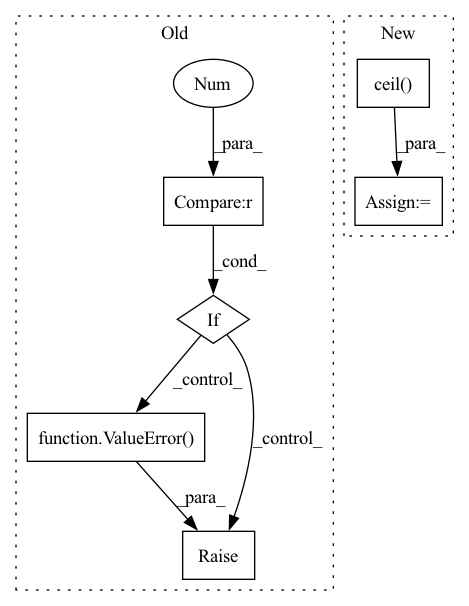

Pattern ID :2106
Before Change
:param features:
:return:
if p.size(1) > 1 :
raise ValueError( "Not Supported shape for propbabilty.")
p = p.cpu().clone()
features = features.cpu().clone()
with mp.Pool(processes=self.num_workers) as pool:After Change
batch_size = p.size(0)
// split the tensors into smaller batches and multi-process them
p_split = torch.split(p, math.ceil( batch_size / self.num_workers) )
feat_split = torch.split(features, math.ceil(batch_size / self.num_workers))
with mp.Pool(processes=self.num_workers) as pool:In pattern: SUPERPATTERN
Frequency: 3
Non-data size: 6
Instances Fragment ID: 9090571
Project Name: turagalab/decode
Commit Name: 6dc5f8a1489142594a36e7e4f6865ea8f0e309d4
Time: 2019-09-11
Author: gitdev@LRM.photo
File Name: deepsmlm/neuralfitter/post_processing.py
M Class Name: ConsistencyPostprocessing
N Class Name: ConsistencyPostprocessing
M Method Name: _cluster_mp(3)
N Method Name: _cluster_mp(3)
M Parent Class: PostProcessing
N Parent Class: PostProcessing
M File Name: deepsmlm/neuralfitter/post_processing.py
N File Name: deepsmlm/neuralfitter/post_processing.py
M Start Line: 481
M End Line: 506
N Start Line: 468
N End Line: 492
Before Change
"Requires distributed package to be available")
rank = dist.get_rank() - 1
if rank >= num_replicas or rank < 0 :
raise ValueError( "Invalid rank {}, rank should be in the interval"
" [0, {}]".format(rank, num_replicas - 1))
self._dataset = dataset
self.total_size = self.num_samples * self.num_replicasAfter Change
self.num_replicas = num_replicas
self.rank = rank
self.epoch = 0
self.num_samples = int(math.ceil( len(self.dataset) * 1.0 / self.num_replicas) )
self.total_size = self.num_samples * self.num_replicas
self.shuffle = shuffle
Fragment ID: 9090576
Project Name: smilelab-fl/fedlab
Commit Name: ad41fdfcaa0df3e84a44fe7bf0ebfd7b7ae2bf5c
Time: 2021-08-02
Author: 928255708@qq.com
File Name: fedlab_utils/dataset/sampler.py
M Class Name: FedDistributedSampler
N Class Name: FedDistributedSampler
M Method Name: __init__(5)
N Method Name: __init__(5)
M Parent Class: torch.utils.data.Sampler
N Parent Class: torch.utils.data.Sampler
M File Name: fedlab_utils/dataset/sampler.py
N File Name: fedlab_utils/dataset/sampler.py
M Start Line: 77
M End Line: 89
N Start Line: 71
N End Line: 80
Before Change
raise ValueError("max_steps must be a non-negative integer")
if max_steps == 0:
return init_val
if max_steps & (max_steps - 1) != 0 :
raise ValueError( "max_steps must be a power of two")
init_data = (cond_fun(init_val), init_val)
_, val = _while_loop(cond_fun, body_fun, init_data, max_steps)
return valAfter Change
return cond_fun(val) & (step < max_steps)
init_data = (cond_fun(init_val), init_val, 0)
rounded_max_steps = base ** int(math.ceil( math.log(max_steps, base)) )
_, val, _ = _while_loop(_cond_fun, body_fun, init_data, rounded_max_steps, base)
return val
Fragment ID: 9090577
Project Name: patrick-kidger/diffrax
Commit Name: 7305660af92bc603d456e4b00806db54fcfd9819
Time: 2021-12-29
Author: 33688385+patrick-kidger@users.noreply.github.com
File Name: diffrax/misc/bounded_while_loop.py
M Class Name: AnonimousClass
N Class Name: AnonimousClass
M Method Name: bounded_while_loop(5)
N Method Name: bounded_while_loop(4)
M Parent Class:
N Parent Class:
M File Name: diffrax/misc/bounded_while_loop.py
N File Name: diffrax/misc/bounded_while_loop.py
M Start Line: 74
M End Line: 78
N Start Line: 10
N End Line: 89